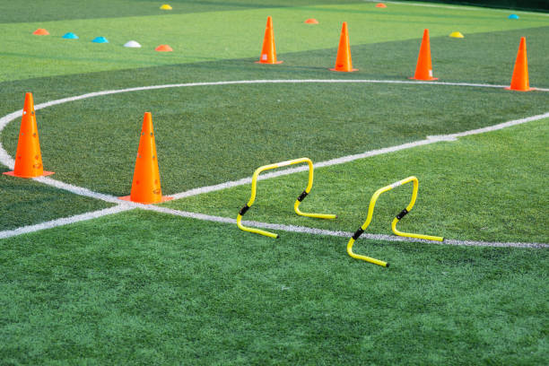

Training mit System
Technik, Fitness, Analyse und Regeneration gehören für mich zusammen.
Performance
Ich versuche, Technik, Athletik, Spielverständnis und Regeneration bewusst zu verbinden. So entsteht eine Entwicklung, die langfristig und ehrlich ist.

Technik, Fitness, Analyse und Regeneration gehören für mich zusammen.
Kraft, Sprint, Beweglichkeit.
Pass, Annahme, Abschluss.
Video, Daten, Reflexion.
Schlaf, Ernährung, Mobility.